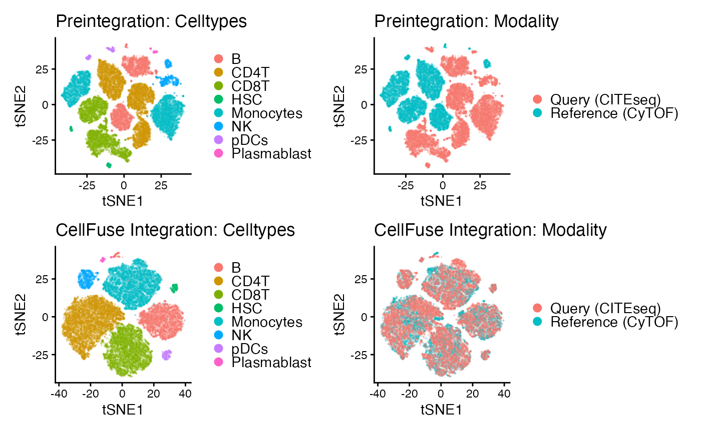

Multi-modal integration of CyTOF and CITE-Seq data
Abhishek Koladiya
CellFuseQuickstart.RmdThe CellFuse package enables reference-based integration and cell type prediction across modalities (e.g., CyTOF and CITE-seq). This vignette provides a step-by-step demonstration of how to train a supervised contrastive learning model using a CyTOF reference and apply it to predict cell types in a query datase
Before using CellFuse, users must ensure a proper Python environment is configured through the reticulate package. This section sets the Python interpreter path, creates a virtual environment, installs necessary Python dependencies (such as torch, pandas, and scikit-learn), and initializes the environment for R to communicate with Python seamlessly. These steps are essential for running the deep learning model underlying CellFuse.
library(reticulate)
use_condaenv("myenv", required = TRUE)
py_config()## python: /opt/homebrew/Caskroom/miniforge/base/envs/myenv/bin/python
## libpython: /opt/homebrew/Caskroom/miniforge/base/envs/myenv/lib/libpython3.10.dylib
## pythonhome: /opt/homebrew/Caskroom/miniforge/base/envs/myenv:/opt/homebrew/Caskroom/miniforge/base/envs/myenv
## version: 3.10.19 | packaged by conda-forge | (main, Oct 22 2025, 22:46:49) [Clang 19.1.7 ]
## numpy: /opt/homebrew/Caskroom/miniforge/base/envs/myenv/lib/python3.10/site-packages/numpy
## numpy_version: 2.2.6
##
## NOTE: Python version was forced by use_python() function
library(CellFuse)Now let’s train CellFuse model using reference data (CyTOF)
ref_dir <- system.file("extdata","Cytof_CITESeq","Reference_Data",package="CellFuse")
pred_dir <- system.file("extdata","Cytof_CITESeq","Predicted_Data",package="CellFuse")
#### Train model using Levine32 data ###
TrainModel(dataset_name="Levine32",data_dir=ref_dir,
save_path=pred_dir,device="cpu",cluster_column="cluster.orig",
lr=as.numeric(0.0009),margin=as.numeric(0.8), bs=as.integer(256),
epoch=as.integer(50),k=as.integer(5), min_delta=as.numeric(0.01),
patience=as.integer(5), val_step=as.integer(5),
output_dim=as.integer(8), dropout_prob=as.numeric(0.7),
activation_function='leaky_relu',alpha=as.numeric(0.01))
Training curve on CyTOF reference
Now let’s use this model to Predict cells in query (CITE-Seq) data
ref_dir <- system.file("extdata","Cytof_CITESeq","Reference_Data",package="CellFuse")
pred_dir <- system.file("extdata","Cytof_CITESeq","Predicted_Data","Saved_model",package="CellFuse")
query_dir <- system.file("extdata","Cytof_CITESeq","Query_Data",package="CellFuse")
### Predict CITEseq data ###
PredictCells(dataset_name="Levine32",data_dir=ref_dir,
test_data_dir=query_dir, test_data="CITEseq",
model_dir=pred_dir,model_date = "2025-11-24",
device="cpu",cluster_column='cluster.orig',
lr=as.numeric(0.001),margin=0.5,
bs=as.integer(256),epoch=as.integer(50),
knn_k=as.integer(5),output_dim=as.integer(8),
dropout_prob=as.numeric(0.5),activation_function='leaky_relu')## Loading the model: /private/var/folders/31/95qcf9qd5xd8jlgntfp59yjr0000gp/T/RtmpaGFVLq/temp_libpath16116344902f9/CellFuse/extdata/Cytof_CITESeq/Predicted_Data/Saved_model/Levine32_2025-11-24.pt
## Projecting embeddings...
## Fitting KNN model...
## Predictions saved to ./Pred_CITEseq_Ref_Levine32_2025-11-24.csv.Finally, integrate reference (CyTOF) and query data (CITE-Seq)
Levine32_path <- system.file(
"extdata","Cytof_CITESeq","Reference_Data","Levine32_train.csv",
package="CellFuse"
)
CITESeq_path <- system.file(
"extdata","Cytof_CITESeq","Query_Data","CITEseq_test.csv",
package="CellFuse"
)
# Integrate query data with reference
corrected_data <- IntegrateData(
ref_path = Levine32_path,
query_path = CITESeq_path,
Celltype_col = "cluster.orig")Create pre- and post integration dataframes and run tSNE on both
## Merge pre-integrated data ##
Levine32 <- read.csv(Levine32_path)
CITESeq <- read.csv(CITESeq_path)
# Pre-integration merge
Levine32$batch <- "Reference (CyTOF)"
CITESeq$batch <- "Query (CITEseq)"
Preintegration <- rbind(Levine32, CITESeq)
# Post-integration merge (corrected_data should be a data.frame)
PostIntegration <- rbind(
transform(Levine32, batch = "Reference (CyTOF)"),
transform(corrected_data, batch = "Query (CITEseq)")
)
## Run tSNE ###
library(Rtsne)
e_pre<- Rtsne(Preintegration[,1:12])
colnames(e_pre$Y)= c("tSNE1","tSNE2")
e_post<- Rtsne(PostIntegration[,1:12])
colnames(e_post$Y)= c("tSNE1","tSNE2")
Preintegration=cbind.data.frame(Preintegration,e_pre$Y)
PostIntegration=cbind.data.frame(PostIntegration,e_post$Y)Visualize pre and post integrated data
library(ggplot2)
library(patchwork)
base_theme <- theme_classic() +
theme(
legend.title = element_blank(),
legend.text = element_text(size = 11),
legend.key.size = unit(3, "mm") # smaller legend key box
)
P1 <- ggplot(Preintegration, aes(tSNE1, tSNE2, colour = cluster.orig)) +
geom_point(size = 0.1, alpha = 0.1) +
base_theme +
ggtitle("Preintegration: Celltypes") +
guides(colour = guide_legend(
override.aes = list(size = 2.5, alpha = 1) # smaller + fully opaque legend
))
P2 <- ggplot(Preintegration, aes(tSNE1, tSNE2, colour = batch)) +
geom_point(size = 0.1, alpha = 0.1) +
base_theme +
ggtitle("Preintegration: Modality") +
guides(colour = guide_legend(
override.aes = list(size = 2.5, alpha = 1)
))
P3 <- ggplot(PostIntegration, aes(tSNE1, tSNE2, colour = cluster.orig)) +
geom_point(size = 0.1, alpha = 0.1) +
base_theme +
ggtitle("CellFuse Integration: Celltypes") +
guides(colour = guide_legend(
override.aes = list(size = 2.5, alpha = 1)
))
P4 <- ggplot(PostIntegration, aes(tSNE1, tSNE2, colour = batch)) +
geom_point(size = 0.1, alpha = 0.1) +
base_theme +
ggtitle("CellFuse Integration: Modality") +
guides(colour = guide_legend(
override.aes = list(size = 2.5, alpha = 1)
))
(P1 | P2) / (P3 | P4)